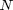
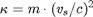
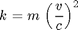

unitCell
The unitCell class hold different structural properties of real physical unit cells and also an array of atoms at different postions in the unit cell.
Copyright (c) 2013, Daniel Schick, André Bojahr, Marc Herzog, Roman Shayduk, Clemens von Korff Schmising All rights reserved.
License: BSD (use/copy/change/redistribute on own risk, mention the authors)
Contents
Classdef
Each unitCell instance and all inherited class objects follow handle semantics. Hence a copy of such object will not copy the object itself, but only a handle to that object.
classdef unitCell < handle
Properties
properties (SetAccess=public,GetAccess=public)
ID % STRING ID of the unit cell
name % STRING name of the unit cell
atoms = {}; % CELL ARRAY of atoms and funtion handle for
% strain dependent displacement
numAtoms = 0; % INTEGER number of atoms in unit cell
aAxis = 0; % FLOAT in-plane a-axis [m]
bAxis = 0; % FLOAT in-plane b-axis [m]
cAxis = 0; % FLOAT out-of-plane c-axis [m]
area = 0; % FLOAT area of epitaxial unit cells
% (need for normation for correct intensities) [m^2]
volume = 0; % FLOAT volume of unit cell [m^3]
mass = 0; % FLOAT mass of unit cell normalized to an area of 1 Ang^2 [kg]
density = 0; % FLOAT density of the unitCell [kg/m^3]
debWalFac = 0; % FLOAT Debye Waller factor <u>^2 [m^2]
soundVel = 0; % FLOAT sound velocity in the unit cell [m/s]
springConst = []; % FLOAT VECTOR spring constant of the unit cell [kg/s^2] and higher orders
phononDamping = 0; % FLOAT damping constant of phonon propagation [kg/s]
optPenDepth = 0; % FLOAT penetration depth for pump always for 1st subsystem
% light in the unit cell [m]
optRefIndex = [0,0];% FLOAT VECTOR optical refractive index - real and imagenary part $n + i\kappa$
optRefIndexPerStrain = [0,0];% FLOAT VECTOR optical refractive index change per strain -
% real and imagenary part %\frac{d n}{d \eta} + i\frac{d \kappa}{d \eta}$
thermCond % CELL ARRAY of HANDLES T-dependent thermal conductivity [W/(m K)]
linThermExp; % CELL ARRAY of HANDLES T-dependent linear thermal expansion
% coefficient (relative)
intLinThermExp; % CELL ARRAY of HANDLES T-dependent integrated linear thermal expansion
% coefficient
heatCapacity; % CELL ARRAY of HANDLES T-dependent heat capacity function [J/(kg K)]
intHeatCapacity; % CELL ARRAY of HANDLES T-dependent integrated heat capacity function
subSystemCoupling % CELL ARRAY of HANDLES of coupling functions of different subsystems [W/m^3]
numSubSystems = 1; % INTEGER number of subsystems for heat and phonons (electrons, lattice, spins, ...)
end%properties
Methods
methods
Constructor
Is executed each time an instance of this class is created. Only the ID, name and cAxis input is obligatory.
function obj = unitCell(ID,name,cAxis,varargin) % initialize input parser and define defaults and validators p = inputParser; p.addRequired('ID' , @ischar); p.addRequired('name' , @ischar); p.addRequired('cAxis' , @isnumeric); p.addParamValue('aAxis' , cAxis , @isnumeric); p.addParamValue('bAxis' , cAxis , @isnumeric); p.addParamValue('debWalFac' , 0 , @isnumeric); p.addParamValue('soundVel' , 0 , @isnumeric); p.addParamValue('phononDamping' , 0 , @isnumeric); p.addParamValue('optPenDepth' , 0 , @isnumeric); p.addParamValue('optRefIndex' , [0,0] , @(x) (isnumeric(x) && numel(x) == 2)); p.addParamValue('optRefIndexPerStrain' , [0,0] , @(x) (isnumeric(x) && numel(x) == 2)); p.addParamValue('thermCond' , 0 , @(x)(isnumeric(x) || isa(x,'function_handle') || ischar(x) || iscell(x))); p.addParamValue('linThermExp' , 0 , @(x)(isnumeric(x) || isa(x,'function_handle') || ischar(x) || iscell(x))); p.addParamValue('heatCapacity' , 0 , @(x)(isnumeric(x) || isa(x,'function_handle') || ischar(x) || iscell(x))); p.addParamValue('subSystemCoupling' , 0 , @(x)(isnumeric(x) || isa(x,'function_handle') || ischar(x) || iscell(x))); % parse the input p.parse(ID,name,cAxis,varargin{:}); % assign parser results to object properties obj.ID = genvarname(p.Results.ID); obj.name = p.Results.name; obj.cAxis = p.Results.cAxis; % if no aAxis and/or bAxis are given, they automatically set if p.Results.aAxis == 0 obj.aAxis = obj.cAxis; else obj.aAxis = p.Results.aAxis; end if p.Results.bAxis == 0 obj.bAxis = obj.aAxis; else obj.bAxis = p.Results.bAxis; end obj.debWalFac = p.Results.debWalFac; obj.soundVel = p.Results.soundVel; obj.phononDamping = p.Results.phononDamping; obj.optPenDepth = p.Results.optPenDepth; obj.optRefIndex = p.Results.optRefIndex; obj.optRefIndexPerStrain = p.Results.optRefIndexPerStrain; obj.heatCapacity = obj.checkCellArrayInput(p.Results.heatCapacity); obj.thermCond = obj.checkCellArrayInput(p.Results.thermCond); obj.linThermExp = obj.checkCellArrayInput(p.Results.linThermExp); obj.subSystemCoupling = obj.checkCellArrayInput(p.Results.subSystemCoupling); if isequal(length(obj.heatCapacity),length(obj.thermCond),length(obj.linThermExp),length(obj.subSystemCoupling)) obj.numSubSystems = length(obj.heatCapacity); else error('Heat capacity, thermal conductivity, linear thermal expansion and subsystem coupling have not the same number of elements!'); end%if % calculate the area of the unit cell obj.area = obj.aAxis * obj.bAxis; obj.volume = obj.area * obj.cAxis; end%function
clone2multiple
Returns a cloned unit cell N time repeated. Accordingly, all physical properties are adapted, despite of any specific function handle of the atomic position in the unit cell and higher orders of spring constants! If no ID or name is given for the cloned unit cell, the name of the current unit cell is taken plus .
function clone = clone2multiple(obj,N,varargin) % initialize input parser and define defaults and validators p = inputParser; p.addRequired('N' , @isnumeric); p.addParamValue('ID' , [obj.ID num2str(N)] , @ischar); p.addParamValue('name' , [obj.name num2str(N)] , @ischar); % parse the input p.parse(N,varargin{:}); % assign parser results N = p.Results.N; newID = p.Results.ID; newName = p.Results.name; % initialize the cloned object with required inputs clone = unitCell(obj.ID,obj.name,obj.cAxis); % copy all properties from the current to the cloned object props = properties(obj); for i = 1:length(props) clone.(props{i}) = obj.(props{i}); end%for % reset some _N_-dependent properties clone.ID = newID; clone.name = newName; clone.cAxis = N*obj.cAxis; clone.volume = N*obj.volume; % reset all atom-dependent properties clone.atoms = {}; clone.mass = 0; clone.density = 0; clone.springConst = 0; clone.numAtoms = 0; % add all atoms to cloned unit cell, but the position handle is % transfered! for i = 0:N-1 for j = 1:obj.numAtoms clone.addAtom(obj.atoms{j,1},obj.atoms{j,2}(0)/N+i/N); end%for end%for end%function
Display
This method is called to display informations of the instance.
function disp(obj) u = units; disp('Unit Cell with the following properties') disp(['ID : ' obj.ID]); disp(['name : ' obj.name]); disp(['a-axis [Ang] : ' num2str(obj.aAxis/u.ang)]); disp(['b-axis [Ang] : ' num2str(obj.bAxis/u.ang)]); disp(['c-axis [Ang] : ' num2str(obj.cAxis/u.ang)]); disp(['area [Ang^2] : ' num2str(obj.area/u.ang^2)]); disp(['volume [Ang^3] : ' num2str(obj.volume/u.ang^3)]); disp(['mass [kg] : ' num2str(obj.mass/u.kg)]); disp(['density [kg/m^3] : ' num2str(obj.density/(u.kg/u.m^3))]); disp(['Debye Waller Factor [m^2] : ' num2str(obj.debWalFac/u.m^2)]); disp(['sound velocity [nm/ps] : ' num2str(obj.soundVel/(u.nm/u.ps))]); disp(['spring constant [kg/s^2] : ' num2str(obj.springConst)]); disp(['phonon damping [kg/s] : ' num2str(obj.phononDamping)]); disp(['opt. pen. depth [nm] : ' num2str(obj.optPenDepth/u.nm)]); disp(['opt. refractive index : ' num2str(obj.optRefIndex)]); disp(['opt. ref. index/strain : ' num2str(obj.optRefIndexPerStrain)]); disp( 'thermal conduct. [W/m K] :'); for i = 1:length(obj.thermCond) fprintf('\t\t\t\t\t\t\t%s\n', func2str(obj.thermCond{i})); end%for disp( 'linear thermal expansion [1/K]: ') for i = 1:length(obj.linThermExp) fprintf('\t\t\t\t\t\t\t%s\n', func2str(obj.linThermExp{i})); end%for disp( 'heat capacity [J/kg K] : ') for i = 1:length(obj.heatCapacity) fprintf('\t\t\t\t\t\t\t%s\n', func2str(obj.heatCapacity{i})); end%for disp( 'subsystem coupling [W/m^3] : ') for i = 1:length(obj.heatCapacity) fprintf('\t\t\t\t\t\t\t%s\n', func2str(obj.subSystemCoupling{i})); end%for % display the constituents disp([num2str(obj.numAtoms) ' Constituents:']); for i = 1:obj.numAtoms fprintf('%s \t %0.2f \t %s\n', obj.atoms{i,1}.name, obj.atoms{i,2}(0), func2str(obj.atoms{i,2})); end%for end%function
visualize
plots the atoms in the unitCell for a given strain. You can input a figure handle.
function visualize(obj,varargin) % initialize input parser and define defaults and validators p = inputParser; p.addRequired('obj' , @(x)isa(x,'unitCell')); p.addParamValue('strain', 0 , @isnumeric); p.addParamValue('pause' , 0.05 , @isnumeric); p.addParamValue('handle', '' , @ishandle); % parse the input p.parse(obj,varargin{:}); % assign parser results to object properties if isempty(p.Results.handle) h = figure; else h = p.Results.handle; end strain = p.Results.strain; figure(h); colors = colormap(lines(obj.numAtoms)); atomIDs = obj.getAtomIDs(); atomsPlotted = zeros(size(atomIDs)); for i = 1:length(strain) for j = 1:obj.numAtoms l = plot(1+0*j,obj.atoms{j,2}(strain(i)),'Marker', 'o', 'MarkerSize', 5, 'MarkerEdgeColor', [0 0 0], 'MarkerFaceColor', colors(strcmp(obj.atoms{j,1}.ID, atomIDs),:), 'LineStyle', 'none'); % check if atom has already been plotted if atomsPlotted(strcmp(obj.atoms{j,1}.ID, atomIDs)) % do not show the atom in the legend hasbehavior(l,'legend',false); else % set that the atom had been plotted atomsPlotted(strcmp(obj.atoms{j,1}.ID, atomIDs)) = true; end%if hold on; end%for % axis([0.1 obj.numAtoms+0.9 -0.1 (1.1+max(strain))]); grid on; box on; title(sprintf('Strain: %.2f%%',strain(i)), 'FontSize', 18); ylabel('relative Position'); xlabel('# Atoms'); hold off pause(p.Results.pause) end%for legend(atomIDs,'Location','NorthWest'); end%function
getParameterStruct
Returns a struct with all parameters. objects or cell arrays and objects are converted to strings. if a type is gven only these properties are returned.
function S = getPropertyStruct(obj,varargin) % initialize input parser and define defaults and validators types = {'all', 'heat', 'phonon', 'XRD', 'optical'}; propertiesByTypes = { 'heat' , {'cAxis' 'area' 'volume' 'optPenDepth' 'thermCond' 'heatCapacity' 'intHeatCapacity' 'subSystemCoupling' 'numSubSystems'}; 'phonon' , {'numSubSystems' 'intLinThermExp' 'cAxis' 'mass' 'springConst' 'phononDamping'}; 'XRD' , {'numAtoms' 'atoms' 'area' 'debWalFac' 'cAxis'}; 'optical' , {'cAxis' 'optPenDepth' 'optRefIndex' 'optRefIndexPerStrain'}; }; p = inputParser; p.addOptional('type', 'all' , @(x)(ischar(x) && find(strcmp(types,x)))); % parse the input p.parse(varargin{:}); % assign parser results to object properties type = p.Results.type; % define the property names by the given type if strcmp(type, 'all') mc = metaclass(obj); probs = cellfun(@(x)(x.Name), mc.Properties, 'UniformOutput', false); else probs = propertiesByTypes{strcmp(propertiesByTypes(:,1),type),2}'; end%if % assign the values of the properties to the output struct for i=1:length(probs) n = probs{i}; S.(n) = obj.(n); end%for end%function
checkCellArrayInput
Checks the input for inputs which are cell arrays of function handles, such as the heat capacity which is a cell array of N function handles.
function output = checkCellArrayInput(obj,input) output = {}; % the output is a cell array % if the input is no cell array, we convert it to one if ~iscell(input) input = {input}; end%if % traverse each cell element and convert it to a function handle for i=1:length(input) if isa(input{i},'function_handle') output{i} = str2func(vectorize(input{i})); elseif ischar(input{i}) try output{i} = str2func(input{i}); catch err error(['String input for unit cell property ' input{i} ' cannot be converted to function handle!']); end%try elseif isnumeric(input{i}) output{i} = str2func(['@(T)(' num2str(input{i}) '.*T./T)']); else error('Unit cell property input has to be a single or cell array of numerics, function handles or strings which can be converted into a function handle!'); end%if end%for end%function
getIntHeatCapacity
Returns the anti-derrivative of the temperature-dependent heat  capacity function. If the intHeatCapacity property is not set, the symbolic integration is performed.
capacity function. If the intHeatCapacity property is not set, the symbolic integration is performed.
function h = get.intHeatCapacity(obj) if iscell(obj.intHeatCapacity) h = obj.intHeatCapacity; elseif exist('syms') % symbolic math toolbox is installed syms T; h = cell(length(obj.heatCapacity),1); for i=1:length(obj.heatCapacity) fstr = strrep(func2str(obj.heatCapacity{i}),'@(T)',''); fstr = strrep(fstr,'.*','*'); fstr = strrep(fstr,'./','/'); fstr = strrep(fstr,'.^','^'); h{i} = str2func(['@(T)(' vectorize(int(sym(fstr),'T')) ')']); end%for obj.intHeatCapacity = h; clear T; else error('The MATLAB Symbolic Math Toolbox is not installed. Please set the analytical anti-derivative of the heat capacity of your unit cells as anonymous function of the temperature T by typing UC.intHeatCapacity = @(T)(c(T)); where UC is the name of the unit cell object.'); end%if end%function
setIntHeatCapacity
Set the integrated heat capacity manually when no Smybolic Math Toolbox is installed.
function set.intHeatCapacity(obj,value) obj.intHeatCapacity = obj.checkCellArrayInput(value); end%function
getIntLinThermExp
Returns the anti-derrivative of theintegrated temperature-dependent linear thermal expansion function. If the intHeatCapacity property is not set, the symbolic integration is performed.
function h = get.intLinThermExp(obj) if iscell(obj.intLinThermExp) h = obj.intLinThermExp; elseif exist('syms') % symbolic math toolbox is installed syms T; h = cell(length(obj.linThermExp),1); for i=1:length(obj.linThermExp) fstr = strrep(func2str(obj.linThermExp{i}),'@(T)',''); fstr = strrep(fstr,'.*','*'); fstr = strrep(fstr,'./','/'); fstr = strrep(fstr,'.^','^'); h{i} = str2func(['@(T)(' vectorize(int(sym(fstr),'T')) ')']); end%for obj.intLinThermExp = h; clear T; else error('The MATLAB Symbolic Math Toolbox is not installed. Please set the analytical anti-derivative of the linear thermal expansion coefficient of your unit cells as anonymous function of the temperature T by typing UC.intLinThermExp = @(T)(a(T)); where UC is the name of the unit cell object.'); end%if end%function
setIntLinThermExp
Set the integrated linear thermal expansion coefficient manually when no Smybolic Math Toolbox is installed.
function set.intLinThermExp(obj,value) obj.intLinThermExp = obj.checkCellArrayInput(value); end%function
addAtom
Adds an atomBase/atomMixed at a relative position of the unit cell.
function addAtom(obj,atom,position) % test the input type of the position if isa(position,'function_handle') % alrighty elseif ischar(position) try position = str2func(position); catch err error(['String input for unit cell property ' position ' cannot be converted to function handle!']); end%try elseif isnumeric(position) position = str2func(['@(strain)(' num2str(position) '*(strain+1))']); else error('Atom position input has to be a scalar, function handle or string which can be converted into a function handle!'); end%if %add the atom at the end of the array obj.atoms(end+1,:) = {atom position}; % increase the number of atoms obj.numAtoms = obj.numAtoms + 1;
Update the mass, density and spring constant of the unit cell automatically:

obj.mass = 0;
for i = 1:obj.numAtoms
obj.mass = obj.mass + obj.atoms{i,1}.mass;
end
obj.density = obj.mass / obj.volume;
obj.mass = obj.mass * 1*units.ang^2 / obj.area;
obj.calcSpringConst();
end%function
addMultipleAtoms
Adds multiple atomBase/atomMixed at a relative position of the unit cell.
function addMultipleAtoms(obj,atom,position,Nb) for i = 1:Nb obj.addAtom(atom,position); end%for end%function
calcSpringConst
Calculates the spring constant of the unit cell from the mass, sound velocity and c-axis

function calcSpringConst(obj) obj.springConst(1) = obj.mass *(obj.soundVel/obj.cAxis)^2; end%function
getAcousticImpedance
function Z = getAcousticImpedance(obj) Z = sqrt(obj.springConst(1)*obj.mass/obj.area^2);% - obj.density * obj.soundVel; end%function
set.soundVel
If the sound velocity is set, the spring constant is (re)calculated.
function set.soundVel(obj,soundVel) obj.soundVel = soundVel; obj.calcSpringConst(); end%function
setHOspringConstants
Set the higher orders of the spring constant for anharmonic phonon simulations.
function setHOspringConstants(obj,HO) p = inputParser; p.addRequired('HO', @(x)(isnumeric(x) && isvector(x))); % parse the input p.parse(HO); % assign parser results to object properties HO = p.Results.HO; % check if HO is column vector and transpose it in this case if size(HO,1) > 1 HO = HO'; end%if obj.springConst(2:end) = []; % reset old higher order spring constants obj.springConst(2:1+numel(HO)) = HO; end%function
getAtomIDs
Returns a cell array of all atom IDs in the unit cell.
function IDs = getAtomIDs(obj) IDs = {}; %cell(obj.numAtoms,1); for i = 1:obj.numAtoms if ~ismember(obj.atoms{i,1}.ID, IDs) IDs{end+1} = obj.atoms{i,1}.ID; end%if end%for end%function
getAtomPositions
Returns a vector of all relative postion of the atoms in the unit cell.
function p = getAtomPositions(obj,strain) if nargin < 2 strain = 0; end%if strains = num2cell(strain*ones(obj.numAtoms,1)); p = real(cellfun(@feval,obj.atoms(:,2),strains)); end%function
end%methods
end%classdef